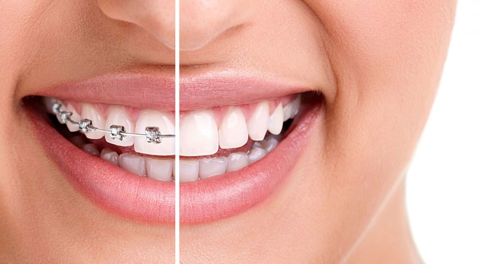
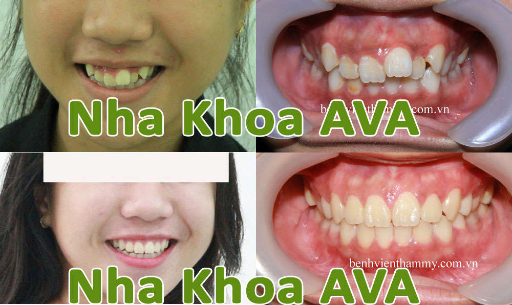
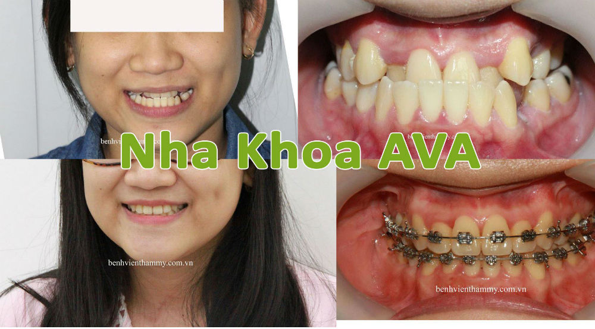
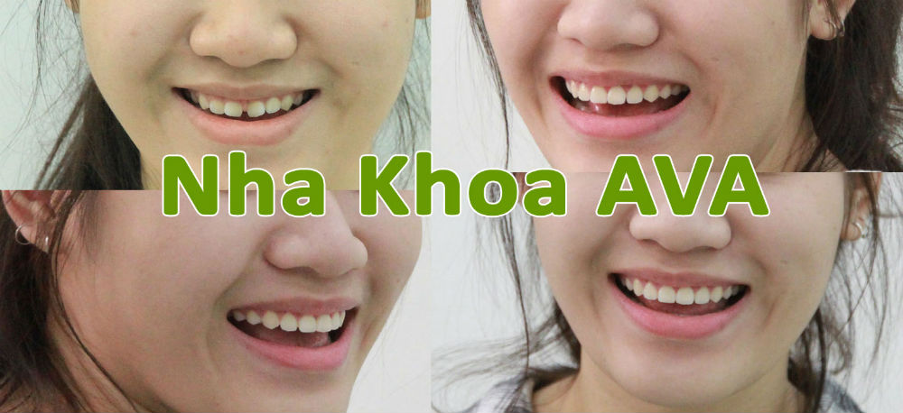
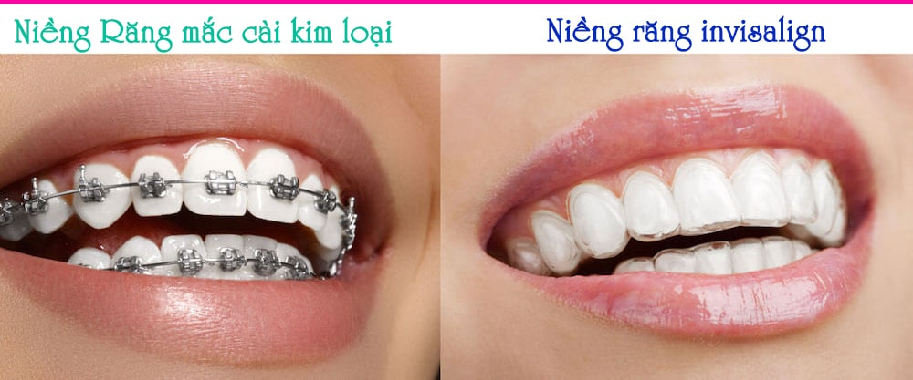

Nha khoa AVA chuyên sâu phục hình răng sứ, niềng răng hô, cấy ghép răng Implant, niềng răng thưa. Phòng Khám Nha Khoa ở Quận 10, TpHCM
Niềng Răng Thẩm Mỹ
Niềng răng là gì? Niềng răng (hay còn gọi là nắn chỉnh răng, chỉnh nha) là một khí cụ được sử dụng trong khoa chỉnh nha để làm thẳng răng mọc khấp khểnh, răng mọc lệch, răng bị hô để đưa chúng về đúng với vị trí trên khớp cắn, đồng thời cải thiện sức khỏe răng miệng. Niềng răng cũng có thể chỉnh răng thưa, móm, hô, v.v. Thời gian điều trị với niềng răng của một người thông thường từ 18-24 tháng, tuy vậy có thể lâu hơn tùy trường hợp theo Niềng răng Wikipedia - Youtube Niềng răng hô, niềng răng thưa .
Có rất nhiều trường hợp có thể sử dụng niềng răng thẩm mỹ để cải thiện tình hình như:
– Niềng răng khấp khểnh, mọc chen chúc, không đều nhau
– Niềng răng hàm trên và hàm dưới không khớp nhau
– Niềng răng móm: răng và hàm bên dưới nhô ra nhiều hơn mức bình thường so với hàm bên trên
– Niềng răng hô: răng và hàm bên trên nhô ra nhiều hơn mức bình thường so với hàm bên dưới
Niềng răng

By Nha Khoa AVA Photographed in Nha Khoa AVA, Quận 10, TpHCM Date uploaded: Jan 25, 2021 Hình ảnh niềng răng đã hoàn thành tại nha khoa AVA
Niềng răng mắc cài là gì?
Đây là phương pháp sử dụng các khí cụ như dây thun, mắc cài nhằm tạo nên một lực kéo lên hàm răng bị khiếm khuyết, từ đó giúp kéo dịch chuyển răng sao cho về đúng vị trí phù hợp.
Trên thị trường hiện nay đã có rất nhiều sản phẩm niềng răng mắc cài khác nhau như mắc niềng răng cài sứ, niềng răng mắc cài kim loại, niềng răng mắc cài pha lê, niềng răng mắc cài tự buộc, niềng răng mắc cài mặt lưỡi. Mỗi một loại sản phẩm đều có những ưu nhược điểm riêng biệt về tính hiệu quả, độ thẩm mỹ, thời gian thực hiện, chi phí tiến hành,… Do đó, tùy thuộc vào nhu cầu và tình hình tài chính của mình mà mỗi khách hàng đều có thể đưa ra một lựa chọn phù hợp.
Niềng răng mắc cài kim loại
Khách hàng có thể lựa chọn các loại kim loại khác nhau để làm mắc cài tùy theo điều kiện, có thể là thép không gỉ, vàng hoặc bạc. Bác sĩ sẽ gắn mắc cài lên từng răng và kết nối bằng dây thép hoặc thun để điều chỉnh khung xương hàm. Mắc cài kim loại thiếu tính thẩm mỹ, gây khó chịu trong thời gian đầu. Khi sử dụng mắc cài, bạn cũng cần tránh các thức ăn dễ mắc vào niềng như kẹo dẻo hay đồ ăn cứng.
Niềng răng mắc cài sứ
Niềng răng mắc cài sứ là phương pháp niềng răng đang dần dần thay thế niềng răng bằng kim loại bởi cũng cùng gắn niềng trực tiếp lên mặt ngoài của hàm răng nhưng niềng răng sứ khó nhận ra đang đeo niềng. Niềng răng mắc cài sứ được làm bằng hợp kim gốm cùng một vài loại vật liệu vô cơ khác. Sau đó dây thun và dây cung môi sẽ được đeo vào để định hình và tăng lực kéo.
Ưu điểm của niềng răng mắc cài sứ:
– Vật liệu sứ làm niềng răng có độ chịu lực tốt và rất khó bị phá vỡ
– Các dây thun có độ đàn hồi cao
– Phù hợp với nhiều bệnh nhân
– Tính thẩm mỹ cao do chốt bằng sứ trùng với màu răng tự nhiên, một số loại còn có dây thun và dây cung môi màu trong suốt.
Nhược điểm của niềng răng mắc cài sứ:
– Chi phí đắt hơn với niềng răng kim loại
– Thời gian niềng răng kéo dài hơn
– Mỗi chốt niềng răng lớn hơn một chút so với loại khác
– Chân đế xung quanh có thể bị nhiễm màu nếu không được chăm sóc vệ sinh đúng cách
Niềng răng invisalign (niềng răng trong suốt)
Phương pháp niềng răng invisalign (niềng răng trong suốt) được biết đến là một cải tiến kỹ thuật hiện đại trong lĩnh vực niềng răng thẩm mỹ. Đối với những người cần phải giao tiếp nhiều với khách hàng theo đặc thù công việc thì đây được xem như một lựa chọn tuyệt vời.
Niềng răng invisalign (niềng răng trong suốt) sử dụng phần mềm máy tính 3D thông minh giúp đo đạc số liệu, tính toán tỉ mỉ để đem lại sự chính xác cao nhất.
Bạn không thể tự ý lựa chọn phương pháp niềng răng mà mình thích. Để đem lại hiệu quả và sự an toàn cao nhất, bạn cần xem xét đến các yếu tố như tình trạng răng miệng, tình hình tài chính, nhu cầu cá nhân về tính thẩm mỹ trong học tập, công việc. Dưới những thông tin này, bác sĩ chuyên khoa tại Bệnh viện Thẩm mỹ sẽ tiến hành tư vấn để tìm và lựa chọn cho bạn một phương pháp niềng răng thẩm mỹ phù hợp (About Invisalign).
Niềng răng mắc cài tự khóa
Cũng giống như các loại niềng răng mắc cài khác, nhưng mắc cài tự khóa (Smart Clip) sẽ có nắp trượt hoặc có cánh kim loại nhằm cố định phần dây. Nhờ đó, dây cung sẽ di chuyển linh hoạt trong phần rãnh mắc cài. Cấu tạo này có tác dụng làm giảm bớt lực ma sát, điều chỉnh, kiểm soát lực phù hợp rất dễ dàng, ít gây biến dạng cho dây. Tuy nhiên, độ dày của mắc cài cũng gây sự khó chịu nhất định cho người dùng. Kỹ thuật này cũng đòi hỏi những bác sĩ có tay nghề cao, chất lượng mắc cài đảm bảo, chi phí tương đối đắt so với mắc cài truyền thống. Tham khảo thêm Bộ Kit Mắc Cài Tự Buộc 3M™ SmartClip™ SL3 tại đây
Chi phí niềng răng hô, thưa, móm
Giá niềng răng mắc cài kim loại
Chỉnh hình răng trẻ em (Giai đoạn:8-12 tuổi, Giai đoạn 2: 12-14 tuổi
Giá: 2 hàm 30,000,000 Vnđ
Chỉnh hình răng người lớn(mắc cài KL)
Giá: 2 hàm 30,000,000 Vnđ
Chỉnh hình răng người lớn(mắc cài KL) Smart Clip
Giá: 2 hàm 35,000,000 Vnđ
Giá niềng răng mắc cài sứ
Chỉnh hình răng người lớn mắc cài sứ thẩm mỹ
Giá: 2 hàm 40,000,000 Vnđ
Chỉnh hình răng người lớn mắc cài sứ thẩm mỹ Smart Clip
Giá: 2 hàm 45,000,000 Vnđ
Giá niềng răng mắc cài Invisalign
Niềng răng mắc cái trong
Giá: 2 hàm 80,000,000 Vnđ
Invisalign – Kỹ thuật chỉnh nha thế hệ mới không mắc cài (2 hàm)
Giá: 2 hàm 110,000,000 Vnđ
Niềng răng hô và cách khắc phục răng hô
Niềng răng bao lâu?
Thời gian điều trị với một case niềng răng của một người thông thường từ 12-24 tháng tùy theo mỗi trường hợp khác nhau như răng lệch lạc ít hay nhiều, răng bạn tốt, làm đúng theo chỉ định của Bác Sĩ. Trước tiên bạn cần đến phòng khám để Bác Sĩ chụp phim và sau đó sẽ tư vấn cụ thể cho bạn hơn (tại nha khoa AVA việc tư vấn niềng răng là miễn phí nên bạn cũng đừng quá lo lắng)
Có thể bạn sẽ quan tâm
- Giải quyết răng hô và chen chúc chỉ với một thủ thuật
- Giá trị của can thiệp chỉnh nha sớm
- Những tác hại khôn lường do răng khôn mọc lệch
- Chỉnh nha hay chỉnh hình răng hàm mặt
Nguyễn Lan Hải
Mình đặt hết "niềm tin và hy dzọng" vào Ths-Bs Nha khoa Viet Hung Pham (*). Sau 4 - 5 tháng Review Nguyễn Lan Hải
Fiona McLean
I visited Ava Dental in September 2018 as a recommendation from a friend .I travelled from New Zealand, very nervous of dentists and the work that I needed Review Fiona McLean
Phạm Thị Thúy
Tuyệt vời! Tận tâm tận tụy! Hiện đại sạch sẽ! Bs Hùng là nha sĩ có tâm nhất mà Thúy biết Review Phạm Thị Thúy
An Mai
Ối giời ơi !!! Nhổ Răng Không Đau Là Có Thật !!! Review An Mai